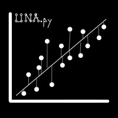

Compartir lo más valioso …UNA-Econometrics-py.

UNA-Econometrics-py is a pseudo academic project with its objective is to give good quality additional material to the classes. This material tries to introduce to the students to experimental economics, where we use computational tools like python and in the future julia to learn how to solve problems outside the classroom and without a board. This is not graded but it is an added value to the economics program of the Universidad Nacional de Costa Rica.
Reference: Alexander Amoretti Alvarado.
The material includes jupyter notebooks with notes and code about how to recreate a lot a econometrics models and use them to try explain and predict human behaviur, prices, survival etc. Everything it is available in GitHub where you will also have the data used for each one of the experiments. In my personal Youtube Channel I do long videos where I guide the students though the code and the documents.
This is an early stage project where I hope to give quality content of economics creating a unique library for UNA-School-Of-Economics and using the library manin to make more enjoyable the learning curve that most of the economics students have.